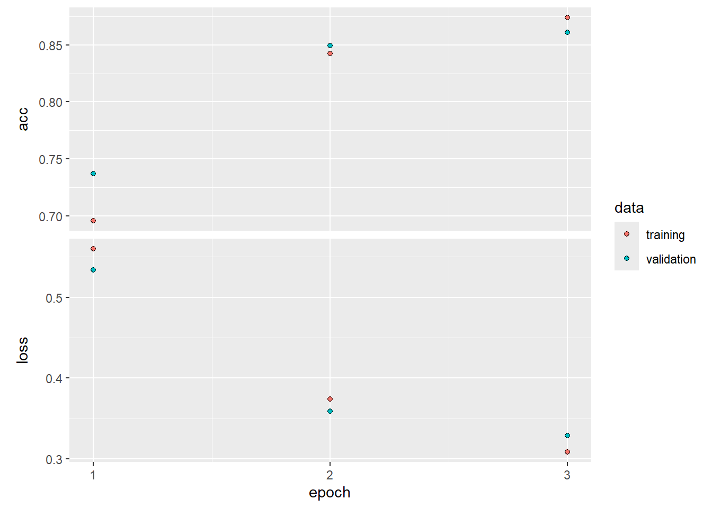
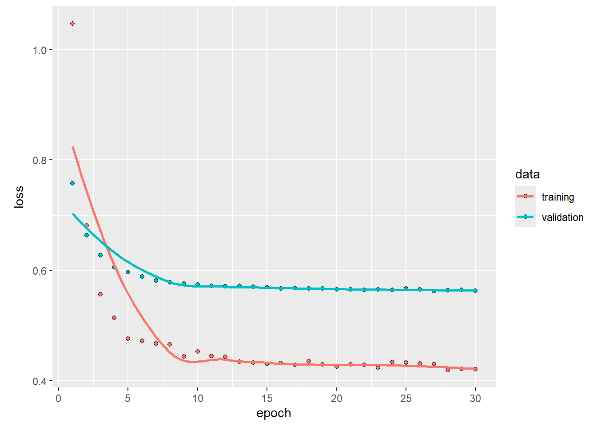
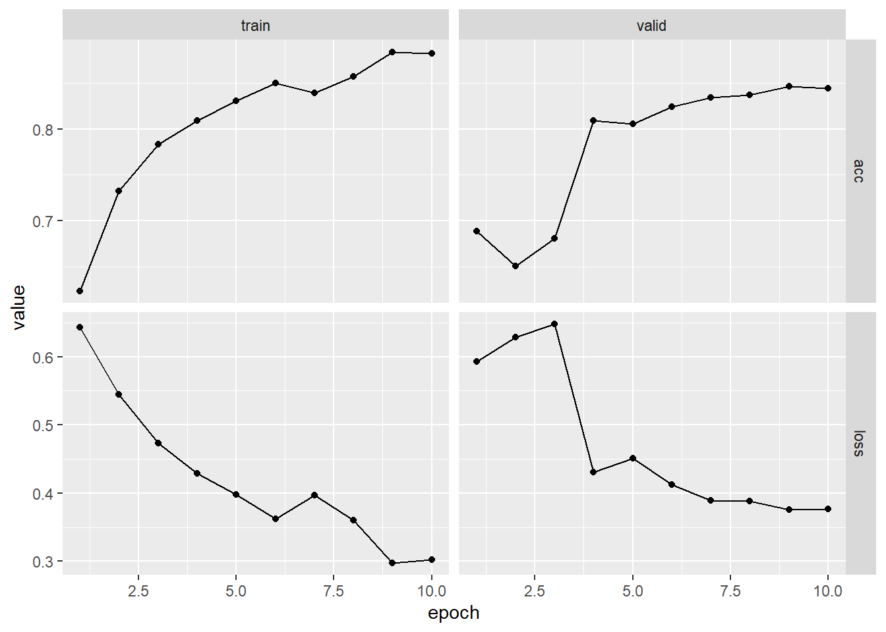
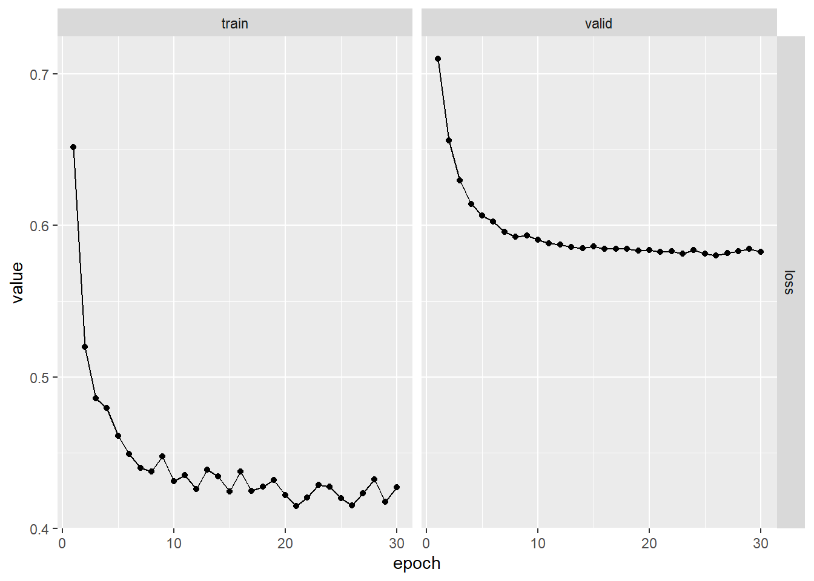

Chapter 10.9.5 and 10.9.6 [ISLR2] An Introduction to Statistical Learning - with Applications in R (2nd Edition). Free access to download the book: https://www.statlearning.com/
To see the help file of a function funcname, type
?funcname.
Getting keras up and running on your computer can be a
challenge. The book website <www.statlearning.com> gives
step-by-step instructions on how to achieve this. Guidance can also be
found at <keras.rstudio.com>.
The torch package has become available as an alternative
to the keras package for deep learning. While
torch does not require a python installation,
the current implementation appears to be a fair bit slower than
keras. We include the torch version of the
implementation at the end of this lab.
In this section, we use the keras package, which
interfaces to the tensorflow package which in turn links to
efficient python code. This code is impressively fast, and
the package is well-structured.
# install.packages("keras3") # Uncomment to Run it for the first time
# install.packages("reticulate") # Uncomment to Run it for the first time
library(reticulate)
use_condaenv("r-reticulate", required = TRUE)
library(keras3)
# install_keras(method = "conda", envname = "r-reticulate") # Uncomment to Run it for the first timeHere we fit a simple LSTM RNN for sentiment analysis with the
IMDb movie-review data.
Now we perform document classification on the IMDB
dataset, which is available as part of the keras package.
We limit the dictionary size to the 10,000 most frequently-used words
and tokens.
max_features <- 10000
imdb <- dataset_imdb(num_words = max_features)
c(c(x_train, y_train), c(x_test, y_test)) %<-% imdbThe third line is a shortcut for unpacking the list of lists. Each
element of x_train is a vector of numbers between 0 and
9999 (the document), referring to the words found in the dictionary. The
indices of the first 12 words are given below.
x_train[[1]][1:12]## [1] 1 14 22 16 43 530 973 1622 1385 65 458 4468To see the words, we create a function, decode_review(),
that provides a simple interface to the dictionary.
word_index <- dataset_imdb_word_index()
decode_review <- function(text, word_index) {
word <- names(word_index)
idx <- unlist(word_index, use.names = FALSE)
word <- c("<PAD>", "<START>", "<UNK>", "<UNUSED>", word)
idx <- c(0:3, idx + 3)
words <- word[match(text, idx, 2)]
paste(words, collapse = " ")
}
decode_review(x_train[[1]][1:12], word_index)## [1] "<START> this film was just brilliant casting location scenery story direction everyone's"Next we write a function to “one-hot” encode each document in a list of documents, and return a binary matrix in sparse-matrix format.
library(Matrix)
one_hot <- function(sequences, dimension) {
seqlen <- sapply(sequences, length)
n <- length(seqlen)
rowind <- rep(1:n, seqlen)
colind <- unlist(sequences)
sparseMatrix(i = rowind, j = colind,
dims = c(n, dimension))
}To construct the sparse matrix, one supplies just the entries that
are nonzero. In the last line we call the function
sparseMatrix() and supply the row indices corresponding to
each document and the column indices corresponding to the words in each
document, since we omit the values they are taken to be all ones. Words
that appear more than once in any given document still get recorded as a
one.
x_train_1h <- one_hot(x_train, 10000)
x_test_1h <- one_hot(x_test, 10000)
dim(x_train_1h)## [1] 25000 10000nnzero(x_train_1h) / (25000 * 10000)## [1] 0.01316987Only 1.3% of the entries are nonzero, so this amounts to considerable savings in memory. We create a validation set of size 2,000, leaving 23,000 for training.
set.seed(3)
ival <- sample(seq(along = y_train), 2000)We first calculate the lengths of the documents.
wc <- sapply(x_train, length)
median(wc)## [1] 178sum(wc <= 500) / length(wc)## [1] 0.91568We see that over 91% of the documents have fewer than 500 words. Our RNN requires all the document sequences to have the same length. We hence restrict the document lengths to the last \(L=500\) words, and pad the beginning of the shorter ones with blanks.
maxlen <- 500
x_train <- pad_sequences(x_train, maxlen = maxlen)
x_test <- pad_sequences(x_test, maxlen = maxlen)
dim(x_train)## [1] 25000 500dim(x_test)## [1] 25000 500x_train[1, 490:500]## [1] 16 4472 113 103 32 15 16 5345 19 178 32The last expression shows the last few words in the first document. At this stage, each of the 500 words in the document is represented using an integer corresponding to the location of that word in the 10,000-word dictionary. The first layer of the RNN is an embedding layer of size 32, which will be learned during training. This layer one-hot encodes each document as a matrix of dimension \(500 \times 10,000\), and then maps these 10,000 dimensions down to 32.
model <- keras_model_sequential() %>%
layer_embedding(input_dim = 10000, output_dim = 32) %>%
layer_lstm(units = 32) %>%
layer_dense(units = 1, activation = "sigmoid")The second layer is an LSTM with 32 units, and the output layer is a single sigmoid for the binary classification task.
The rest is now similar to other networks we have fit. We track the test performance as the network is fit, and see that it attains 87% accuracy.
model %>% compile(optimizer = "rmsprop",
loss = "binary_crossentropy", metrics = c("acc"))
#history <- model %>% fit(x_train, y_train, epochs = 10,
history <- model %>% fit(x_train, y_train, epochs = 3,
batch_size = 128, validation_data = list(x_test, y_test))## Epoch 1/3
## 196/196 - 80s - 408ms/step - acc: 0.6957 - loss: 0.5598 - val_acc: 0.7373 - val_loss: 0.5335
## Epoch 2/3
## 196/196 - 57s - 289ms/step - acc: 0.8424 - loss: 0.3742 - val_acc: 0.8492 - val_loss: 0.3591
## Epoch 3/3
## 196/196 - 55s - 281ms/step - acc: 0.8738 - loss: 0.3086 - val_acc: 0.8610 - val_loss: 0.3288plot(history)
predy <- predict(model, x_test) > 0.5## 782/782 - 21s - 27ms/stepmean(abs(y_test == as.numeric(predy)))## [1] 0.861We now show how to fit the models for time series prediction. We first set up the data, and standardize each of the variables.
library(ISLR2)
xdata <- data.matrix(
NYSE[, c("DJ_return", "log_volume","log_volatility")]
)
istrain <- NYSE[, "train"]
xdata <- scale(xdata)The variable istrain contains a TRUE for
each year that is in the training set, and a FALSE for each
year in the test set.
We first write functions to create lagged versions of the three time
series. We start with a function that takes as input a data matrix and a
lag \(L\), and returns a lagged version
of the matrix. It simply inserts \(L\)
rows of NA at the top, and truncates the bottom.
lagm <- function(x, k = 1) {
n <- nrow(x)
pad <- matrix(NA, k, ncol(x))
rbind(pad, x[1:(n - k), ])
}We now use this function to create a data frame with all the required lags, as well as the response variable.
arframe <- data.frame(log_volume = xdata[, "log_volume"],
L1 = lagm(xdata, 1), L2 = lagm(xdata, 2),
L3 = lagm(xdata, 3), L4 = lagm(xdata, 4),
L5 = lagm(xdata, 5)
)If we look at the first five rows of this frame, we will see some
missing values in the lagged variables (due to the construction above).
We remove these rows, and adjust istrain accordingly.
arframe <- arframe[-(1:5), ]
istrain <- istrain[-(1:5)]We now fit the linear AR model to the training data using
lm(), and predict on the test data.
arfit <- lm(log_volume ~ ., data = arframe[istrain, ])
arpred <- predict(arfit, arframe[!istrain, ])
V0 <- var(arframe[!istrain, "log_volume"])
1 - mean((arpred - arframe[!istrain, "log_volume"])^2) / V0## [1] 0.413223The last two lines compute the \(R^2\) on the test data. We refit this
model, including the factor variable day_of_week.
arframed <- data.frame(day = NYSE[-(1:5), "day_of_week"], arframe)
arfitd <- lm(log_volume ~ ., data = arframed[istrain, ])
arpredd <- predict(arfitd, arframed[!istrain, ])
1 - mean((arpredd - arframe[!istrain, "log_volume"])^2) / V0## [1] 0.4598616To fit the RNN, we need to reshape these data, since it expects a sequence of \(L=5\) feature vectors \(X={X_\ell}_1^L\) for each observation. These are lagged versions of the time series going back \(L\) time points.
n <- nrow(arframe)
xrnn <- data.matrix(arframe[, -1])
xrnn <- array(xrnn, c(n, 3, 5))
xrnn <- xrnn[,, 5:1]
xrnn <- aperm(xrnn, c(1, 3, 2))
dim(xrnn)## [1] 6046 5 3We have done this in four steps. The first simply extracts the \(n\times 15\) matrix of lagged versions of
the three predictor variables from arframe. The second
converts this matrix to an \(n\times 3\times
5\) array. We can do this by simply changing the dimension
attribute, since the new array is filled column wise. The third step
reverses the order of lagged variables, so that index 1 is furthest back
in time, and index 5 closest. The final step rearranges the coordinates
of the array (like a partial transpose) into the format that the RNN
module in keras expects.
Now we are ready to proceed with the RNN, which uses 12 hidden units.
model <- keras_model_sequential(
layers = list(
layer_input(shape = c(5L, 3L)),
layer_simple_rnn(units = 12, dropout = 0.1, recurrent_dropout = 0.1),
layer_dense(units = 1)
)
)
model |> compile(optimizer = "rmsprop", loss = "mse")We specify two forms of dropout for the units feeding into the hidden layer. The first is for the input sequence feeding into this layer, and the second is for the previous hidden units feeding into the layer. The output layer has a single unit for the response.
We fit the model in a similar fashion to previous networks. We supply
the fit function with test data as validation data, so that
when we monitor its progress and plot the history function we can see
the progress on the test data. Of course we should not use this as a
basis for early stopping, since then the test performance would be
biased.
history <- model %>% fit(
xrnn[istrain,, ], arframe[istrain, "log_volume"],
# batch_size = 64, epochs = 200,
batch_size = 64, epochs = 75,
validation_data =
list(xrnn[!istrain,, ], arframe[!istrain, "log_volume"])
)## Epoch 1/75
## 67/67 - 1s - 18ms/step - loss: 0.7294 - val_loss: 0.7172
## Epoch 2/75
## 67/67 - 0s - 4ms/step - loss: 0.5603 - val_loss: 0.6693
## Epoch 3/75
## 67/67 - 0s - 4ms/step - loss: 0.5317 - val_loss: 0.6646
## Epoch 4/75
## 67/67 - 0s - 4ms/step - loss: 0.5161 - val_loss: 0.6575
## Epoch 5/75
## 67/67 - 0s - 4ms/step - loss: 0.5058 - val_loss: 0.6587
## Epoch 6/75
## 67/67 - 0s - 4ms/step - loss: 0.5112 - val_loss: 0.6544
## Epoch 7/75
## 67/67 - 0s - 4ms/step - loss: 0.5038 - val_loss: 0.6533
## Epoch 8/75
## 67/67 - 0s - 4ms/step - loss: 0.5080 - val_loss: 0.6537
## Epoch 9/75
## 67/67 - 0s - 4ms/step - loss: 0.5137 - val_loss: 0.6524
## Epoch 10/75
## 67/67 - 0s - 4ms/step - loss: 0.5131 - val_loss: 0.6518
## Epoch 11/75
## 67/67 - 0s - 4ms/step - loss: 0.5114 - val_loss: 0.6486
## Epoch 12/75
## 67/67 - 0s - 3ms/step - loss: 0.4957 - val_loss: 0.6527
## Epoch 13/75
## 67/67 - 0s - 3ms/step - loss: 0.5021 - val_loss: 0.6484
## Epoch 14/75
## 67/67 - 0s - 4ms/step - loss: 0.5070 - val_loss: 0.6460
## Epoch 15/75
## 67/67 - 0s - 4ms/step - loss: 0.5025 - val_loss: 0.6495
## Epoch 16/75
## 67/67 - 0s - 5ms/step - loss: 0.4956 - val_loss: 0.6457
## Epoch 17/75
## 67/67 - 0s - 3ms/step - loss: 0.5032 - val_loss: 0.6471
## Epoch 18/75
## 67/67 - 0s - 4ms/step - loss: 0.4904 - val_loss: 0.6456
## Epoch 19/75
## 67/67 - 0s - 4ms/step - loss: 0.4834 - val_loss: 0.6435
## Epoch 20/75
## 67/67 - 0s - 4ms/step - loss: 0.4878 - val_loss: 0.6406
## Epoch 21/75
## 67/67 - 0s - 4ms/step - loss: 0.4980 - val_loss: 0.6460
## Epoch 22/75
## 67/67 - 0s - 4ms/step - loss: 0.5028 - val_loss: 0.6442
## Epoch 23/75
## 67/67 - 0s - 4ms/step - loss: 0.4979 - val_loss: 0.6419
## Epoch 24/75
## 67/67 - 0s - 4ms/step - loss: 0.4879 - val_loss: 0.6414
## Epoch 25/75
## 67/67 - 0s - 4ms/step - loss: 0.5031 - val_loss: 0.6398
## Epoch 26/75
## 67/67 - 0s - 5ms/step - loss: 0.4807 - val_loss: 0.6373
## Epoch 27/75
## 67/67 - 0s - 3ms/step - loss: 0.4879 - val_loss: 0.6410
## Epoch 28/75
## 67/67 - 0s - 4ms/step - loss: 0.4840 - val_loss: 0.6366
## Epoch 29/75
## 67/67 - 0s - 4ms/step - loss: 0.4914 - val_loss: 0.6364
## Epoch 30/75
## 67/67 - 0s - 4ms/step - loss: 0.4774 - val_loss: 0.6349
## Epoch 31/75
## 67/67 - 0s - 4ms/step - loss: 0.4825 - val_loss: 0.6338
## Epoch 32/75
## 67/67 - 0s - 4ms/step - loss: 0.4898 - val_loss: 0.6348
## Epoch 33/75
## 67/67 - 0s - 4ms/step - loss: 0.4918 - val_loss: 0.6343
## Epoch 34/75
## 67/67 - 0s - 4ms/step - loss: 0.4802 - val_loss: 0.6370
## Epoch 35/75
## 67/67 - 0s - 3ms/step - loss: 0.4776 - val_loss: 0.6320
## Epoch 36/75
## 67/67 - 0s - 4ms/step - loss: 0.4783 - val_loss: 0.6355
## Epoch 37/75
## 67/67 - 0s - 4ms/step - loss: 0.4833 - val_loss: 0.6321
## Epoch 38/75
## 67/67 - 0s - 4ms/step - loss: 0.4707 - val_loss: 0.6363
## Epoch 39/75
## 67/67 - 0s - 4ms/step - loss: 0.4782 - val_loss: 0.6315
## Epoch 40/75
## 67/67 - 0s - 4ms/step - loss: 0.4693 - val_loss: 0.6331
## Epoch 41/75
## 67/67 - 0s - 4ms/step - loss: 0.4741 - val_loss: 0.6329
## Epoch 42/75
## 67/67 - 0s - 3ms/step - loss: 0.4725 - val_loss: 0.6330
## Epoch 43/75
## 67/67 - 0s - 4ms/step - loss: 0.4842 - val_loss: 0.6303
## Epoch 44/75
## 67/67 - 0s - 4ms/step - loss: 0.4753 - val_loss: 0.6335
## Epoch 45/75
## 67/67 - 0s - 4ms/step - loss: 0.4703 - val_loss: 0.6327
## Epoch 46/75
## 67/67 - 0s - 4ms/step - loss: 0.4862 - val_loss: 0.6318
## Epoch 47/75
## 67/67 - 0s - 4ms/step - loss: 0.4791 - val_loss: 0.6330
## Epoch 48/75
## 67/67 - 0s - 4ms/step - loss: 0.4776 - val_loss: 0.6326
## Epoch 49/75
## 67/67 - 0s - 3ms/step - loss: 0.4739 - val_loss: 0.6319
## Epoch 50/75
## 67/67 - 0s - 4ms/step - loss: 0.4726 - val_loss: 0.6307
## Epoch 51/75
## 67/67 - 0s - 4ms/step - loss: 0.4715 - val_loss: 0.6307
## Epoch 52/75
## 67/67 - 0s - 4ms/step - loss: 0.4735 - val_loss: 0.6333
## Epoch 53/75
## 67/67 - 0s - 4ms/step - loss: 0.4819 - val_loss: 0.6320
## Epoch 54/75
## 67/67 - 0s - 4ms/step - loss: 0.4712 - val_loss: 0.6289
## Epoch 55/75
## 67/67 - 0s - 4ms/step - loss: 0.4761 - val_loss: 0.6311
## Epoch 56/75
## 67/67 - 0s - 4ms/step - loss: 0.4818 - val_loss: 0.6279
## Epoch 57/75
## 67/67 - 0s - 4ms/step - loss: 0.4701 - val_loss: 0.6315
## Epoch 58/75
## 67/67 - 0s - 4ms/step - loss: 0.4866 - val_loss: 0.6337
## Epoch 59/75
## 67/67 - 0s - 4ms/step - loss: 0.4803 - val_loss: 0.6296
## Epoch 60/75
## 67/67 - 0s - 4ms/step - loss: 0.4724 - val_loss: 0.6277
## Epoch 61/75
## 67/67 - 0s - 4ms/step - loss: 0.4788 - val_loss: 0.6310
## Epoch 62/75
## 67/67 - 0s - 4ms/step - loss: 0.4816 - val_loss: 0.6269
## Epoch 63/75
## 67/67 - 0s - 4ms/step - loss: 0.4603 - val_loss: 0.6283
## Epoch 64/75
## 67/67 - 0s - 4ms/step - loss: 0.4679 - val_loss: 0.6310
## Epoch 65/75
## 67/67 - 0s - 4ms/step - loss: 0.4729 - val_loss: 0.6287
## Epoch 66/75
## 67/67 - 0s - 5ms/step - loss: 0.4825 - val_loss: 0.6322
## Epoch 67/75
## 67/67 - 0s - 4ms/step - loss: 0.4762 - val_loss: 0.6268
## Epoch 68/75
## 67/67 - 0s - 4ms/step - loss: 0.4667 - val_loss: 0.6283
## Epoch 69/75
## 67/67 - 0s - 4ms/step - loss: 0.4837 - val_loss: 0.6252
## Epoch 70/75
## 67/67 - 0s - 4ms/step - loss: 0.4712 - val_loss: 0.6241
## Epoch 71/75
## 67/67 - 0s - 4ms/step - loss: 0.4757 - val_loss: 0.6327
## Epoch 72/75
## 67/67 - 0s - 4ms/step - loss: 0.4666 - val_loss: 0.6268
## Epoch 73/75
## 67/67 - 0s - 4ms/step - loss: 0.4736 - val_loss: 0.6292
## Epoch 74/75
## 67/67 - 0s - 4ms/step - loss: 0.4729 - val_loss: 0.6310
## Epoch 75/75
## 67/67 - 0s - 4ms/step - loss: 0.4720 - val_loss: 0.6280kpred <- predict(model, xrnn[!istrain,, ])## 56/56 - 0s - 6ms/step1 - mean((kpred - arframe[!istrain, "log_volume"])^2) / V0## [1] 0.4042403This model takes about one minute to train. We could replace the
keras_model_sequential() command above with the following
command:
model <- keras_model_sequential(
layers = list(
layer_input(shape = c(5L, 3L)),
layer_flatten(),
layer_dense(units = 1)
)
)
model |> compile(optimizer = "rmsprop", loss = "mse")Here, layer_flatten() simply takes the input sequence
and turns it into a long vector of predictors. This results in a linear
AR model. To fit a nonlinear AR model, we could add in a hidden
layer.
However, since we already have the matrix of lagged variables from
the AR model that we fit earlier using the lm() command, we
can actually fit a nonlinear AR model without needing to perform
flattening. We extract the model matrix x from
arframed, which includes the day_of_week
variable.
x <- model.matrix(log_volume ~ . - 1, data = arframed)
colnames(x)## [1] "dayfri" "daymon" "daythur"
## [4] "daytues" "daywed" "L1.DJ_return"
## [7] "L1.log_volume" "L1.log_volatility" "L2.DJ_return"
## [10] "L2.log_volume" "L2.log_volatility" "L3.DJ_return"
## [13] "L3.log_volume" "L3.log_volatility" "L4.DJ_return"
## [16] "L4.log_volume" "L4.log_volatility" "L5.DJ_return"
## [19] "L5.log_volume" "L5.log_volatility"The -1 in the formula avoids the creation of a column of
ones for the intercept. The variable day_of_week is a
five-level factor (there are five trading days), and the -1
results in five rather than four dummy variables.
The rest of the steps to fit a nonlinear AR model should by now be familiar.
arnnd <- keras_model_sequential(
layers = list(
layer_input(shape = as.integer(ncol(x))),
layer_dense(units = 32, activation = "relu"),
layer_dropout(rate = 0.5),
layer_dense(units = 1)
)
) |>
compile(optimizer = "rmsprop", loss = "mse")
history <- arnnd |>
fit(
x[istrain, , drop = FALSE],
arframe[istrain, "log_volume"],
epochs = 30,
batch_size = 32,
validation_split = NULL,
validation_data = list(
x[!istrain, , drop = FALSE],
arframe[!istrain, "log_volume"]
),
verbose = 2
)## Epoch 1/30
## 134/134 - 1s - 6ms/step - loss: 1.0470 - val_loss: 0.7574
## Epoch 2/30
## 134/134 - 0s - 3ms/step - loss: 0.6815 - val_loss: 0.6635
## Epoch 3/30
## 134/134 - 0s - 3ms/step - loss: 0.5570 - val_loss: 0.6275
## Epoch 4/30
## 134/134 - 0s - 3ms/step - loss: 0.5140 - val_loss: 0.6061
## Epoch 5/30
## 134/134 - 0s - 3ms/step - loss: 0.4768 - val_loss: 0.5972
## Epoch 6/30
## 134/134 - 0s - 3ms/step - loss: 0.4725 - val_loss: 0.5886
## Epoch 7/30
## 134/134 - 0s - 3ms/step - loss: 0.4680 - val_loss: 0.5815
## Epoch 8/30
## 134/134 - 0s - 3ms/step - loss: 0.4661 - val_loss: 0.5789
## Epoch 9/30
## 134/134 - 0s - 3ms/step - loss: 0.4446 - val_loss: 0.5758
## Epoch 10/30
## 134/134 - 0s - 3ms/step - loss: 0.4534 - val_loss: 0.5744
## Epoch 11/30
## 134/134 - 0s - 3ms/step - loss: 0.4447 - val_loss: 0.5721
## Epoch 12/30
## 134/134 - 0s - 3ms/step - loss: 0.4432 - val_loss: 0.5711
## Epoch 13/30
## 134/134 - 0s - 3ms/step - loss: 0.4348 - val_loss: 0.5720
## Epoch 14/30
## 134/134 - 0s - 3ms/step - loss: 0.4328 - val_loss: 0.5709
## Epoch 15/30
## 134/134 - 0s - 3ms/step - loss: 0.4303 - val_loss: 0.5699
## Epoch 16/30
## 134/134 - 0s - 3ms/step - loss: 0.4326 - val_loss: 0.5672
## Epoch 17/30
## 134/134 - 0s - 3ms/step - loss: 0.4292 - val_loss: 0.5679
## Epoch 18/30
## 134/134 - 0s - 3ms/step - loss: 0.4353 - val_loss: 0.5675
## Epoch 19/30
## 134/134 - 0s - 3ms/step - loss: 0.4298 - val_loss: 0.5670
## Epoch 20/30
## 134/134 - 0s - 2ms/step - loss: 0.4260 - val_loss: 0.5658
## Epoch 21/30
## 134/134 - 0s - 3ms/step - loss: 0.4295 - val_loss: 0.5661
## Epoch 22/30
## 134/134 - 0s - 3ms/step - loss: 0.4290 - val_loss: 0.5646
## Epoch 23/30
## 134/134 - 0s - 3ms/step - loss: 0.4241 - val_loss: 0.5661
## Epoch 24/30
## 134/134 - 0s - 3ms/step - loss: 0.4339 - val_loss: 0.5651
## Epoch 25/30
## 134/134 - 0s - 3ms/step - loss: 0.4334 - val_loss: 0.5673
## Epoch 26/30
## 134/134 - 0s - 3ms/step - loss: 0.4314 - val_loss: 0.5659
## Epoch 27/30
## 134/134 - 0s - 3ms/step - loss: 0.4303 - val_loss: 0.5625
## Epoch 28/30
## 134/134 - 0s - 3ms/step - loss: 0.4191 - val_loss: 0.5642
## Epoch 29/30
## 134/134 - 0s - 3ms/step - loss: 0.4219 - val_loss: 0.5650
## Epoch 30/30
## 134/134 - 0s - 3ms/step - loss: 0.4208 - val_loss: 0.5635# plot training history
plot(history)
npred <- predict(arnnd, x[!istrain, , drop = FALSE]) |> as.numeric()## 56/56 - 0s - 2ms/step1 - mean((arframe[!istrain, "log_volume"] - npred)^2) / V0## [1] 0.4653884Our RNN requires all the document sequences to have the same length.
We hence restrict the document lengths to the last \(L=500\) words, and pad the beginning of the
shorter ones with blanks. We will use torchdatasets
functionality for this.
# install.packages("torch")
# install.packages("luz")
# install.packages("torchvision")
# install.packages("torchdatasets")
# install.packages("zeallot")
library(torch)##
## Attaching package: 'torch'## The following object is masked from 'package:keras3':
##
## as_iterator## The following object is masked from 'package:reticulate':
##
## as_iteratorlibrary(luz) # high-level interface for torch##
## Attaching package: 'luz'## The following object is masked from 'package:keras3':
##
## evaluatelibrary(torchvision) # for datasets and image transformation
library(torchdatasets) # for datasets we are going to use
library(zeallot)
torch_manual_seed(6805)maxlen <- 500
num_words <- 10000
imdb_train <- imdb_dataset(root = ".", split = "train", num_words = num_words, maxlen = maxlen) # include argument "download = TRUE" for the first-time run
imdb_test <- imdb_dataset(root = ".", split = "test", num_words = num_words, maxlen = maxlen) # include argument "download = TRUE" for the first-time run
vocab <- c(rep(NA, imdb_train$index_from - 1), imdb_train$get_vocabulary())
tail(names(vocab)[imdb_train[1]$x])## [1] "seeing" "it" "again" "for" "a" ""The last expression shows the last few words in the first document. At this stage, each of the 500 words in the document is represented using an integer corresponding to the location of that word in the 10,000-word dictionary. The first layer of the RNN is an embedding layer of size 32, which will be learned during training. This layer one-hot encodes each document as a matrix of dimension \(500 \times 10,000\), and then maps these 10,000 dimensions down to 32.
model <- nn_module(
initialize = function() {
self$embedding <- nn_embedding(10000 + 3, 32)
self$lstm <- nn_lstm(input_size = 32, hidden_size = 32, batch_first = TRUE)
self$dense <- nn_linear(32, 1)
},
forward = function(x) {
c(output, c(hn, cn)) %<-% (x %>%
self$embedding() %>%
self$lstm())
output[,-1,] %>% # get the last output
self$dense() %>%
torch_flatten(start_dim = 1)
}
)The second layer is an LSTM with 32 units, and the output layer is a single logit for the binary classification task. The rest is now similar to other networks we have fit. We track the test performance as the network is fit, and see that it attains 87% accuracy.
model <- model %>%
setup(
loss = nn_bce_with_logits_loss(),
optimizer = optim_rmsprop,
metrics = list(luz_metric_binary_accuracy_with_logits())
) %>%
set_opt_hparams(lr = 0.001)
fitted <- model %>% fit(
imdb_train,
epochs = 10,
dataloader_options = list(batch_size = 128),
valid_data = imdb_test
)
plot(fitted)
predy <- torch_sigmoid(predict(fitted, imdb_test)) > 0.5
evaluate(fitted, imdb_test, dataloader_options = list(batch_size = 512))## A `luz_module_evaluation`
## ── Results ─────────────────────────────────────────────────────────────────────
## loss: 0.3771
## acc: 0.8442We now show how to fit the models for time series prediction. We first set up the data, and standardize each of the variables.
library(ISLR2)
xdata <- data.matrix(
NYSE[, c("DJ_return", "log_volume","log_volatility")]
)
istrain <- NYSE[, "train"]
xdata <- scale(xdata)The variable istrain contains a TRUE for
each year that is in the training set, and a FALSE for each
year in the test set.
We first write functions to create lagged versions of the three time
series. We start with a function that takes as input a data matrix and a
lag \(L\), and returns a lagged version
of the matrix. It simply inserts \(L\)
rows of NA at the top, and truncates the bottom.
lagm <- function(x, k = 1) {
n <- nrow(x)
pad <- matrix(NA, k, ncol(x))
rbind(pad, x[1:(n - k), ])
}We now use this function to create a data frame with all the required lags, as well as the response variable.
arframe <- data.frame(log_volume = xdata[, "log_volume"],
L1 = lagm(xdata, 1), L2 = lagm(xdata, 2),
L3 = lagm(xdata, 3), L4 = lagm(xdata, 4),
L5 = lagm(xdata, 5)
)If we look at the first five rows of this frame, we will see some
missing values in the lagged variables (due to the construction above).
We remove these rows, and adjust istrain accordingly.
arframe <- arframe[-(1:5), ]
istrain <- istrain[-(1:5)]To fit the RNN, we need to reshape these data, since it expects a sequence of \(L=5\) feature vectors \(X=\{X_\ell\}_1^L\) for each observation. These are lagged versions of the time series going back \(L\) time points.
n <- nrow(arframe)
xrnn <- data.matrix(arframe[, -1])
xrnn <- array(xrnn, c(n, 3, 5))
xrnn <- xrnn[,, 5:1]
xrnn <- aperm(xrnn, c(1, 3, 2))
dim(xrnn)## [1] 6046 5 3We have done this in four steps. The first simply extracts the \(n\times 15\) matrix of lagged versions of
the three predictor variables from arframe. The second
converts this matrix to a \(n\times 3\times
5\) array. We can do this by simply changing the dimension
attribute, since the new array is filled column wise. The third step
reverses the order of lagged variables, so that index 1 is furthest back
in time, and index 5 closest. The final step rearranges the coordinates
of the array (like a partial transpose) into the format that the RNN
module in torch expects.
Now we are ready to proceed with the RNN, which uses 12 hidden units.
model <- nn_module(
initialize = function() {
self$rnn <- nn_rnn(3, 12, batch_first = TRUE)
self$dense <- nn_linear(12, 1)
self$dropout <- nn_dropout(0.2)
},
forward = function(x) {
c(output, ...) %<-% (x %>%
self$rnn())
output[,-1,] %>%
self$dropout() %>%
self$dense() %>%
torch_flatten(start_dim = 1)
}
)
model <- model %>%
setup(
optimizer = optim_rmsprop,
loss = nn_mse_loss()
) %>%
set_opt_hparams(lr = 0.001)The output layer has a single unit for the response.
We fit the model in a similar fashion to previous networks. We supply
the fit function with test data as validation data, so that
when we monitor its progress and plot the history function we can see
the progress on the test data. Of course we should not use this as a
basis for early stopping, since then the test performance would be
biased.
fitted <- model %>% fit(
list(xrnn[istrain,, ], arframe[istrain, "log_volume"]),
epochs = 30, # = 200,
dataloader_options = list(batch_size = 64),
valid_data =
list(xrnn[!istrain,, ], arframe[!istrain, "log_volume"])
)## Warning in (structure(function (x) : collector syntax has changed,
## * Please use `..` instead of `...`
## * `` => ``kpred <- as.numeric(predict(fitted, xrnn[!istrain,, ]))
1 - mean((kpred - arframe[!istrain, "log_volume"])^2) / V0## [1] 0.4049898This model takes about one minute to train.
We could replace the nn_module() command above with the
following command:
model <- nn_module(
initialize = function() {
self$dense <- nn_linear(15, 1)
},
forward = function(x) {
x %>%
torch_flatten(start_dim = 2) %>%
self$dense()
}
)Here, torch_flatten() simply takes the input sequence
and turns it into a long vector of predictors. This results in a linear
AR model. To fit a nonlinear AR model, we could add in a hidden
layer.
However, since we already have the matrix of lagged variables from
the AR model that we fit earlier using the lm() command, we
can actually fit a nonlinear AR model without needing to perform
flattening. We extract the model matrix x from
arframed, which includes the day_of_week
variable.
x <- model.matrix(log_volume ~ . - 1, data = arframed)
colnames(x)## [1] "dayfri" "daymon" "daythur"
## [4] "daytues" "daywed" "L1.DJ_return"
## [7] "L1.log_volume" "L1.log_volatility" "L2.DJ_return"
## [10] "L2.log_volume" "L2.log_volatility" "L3.DJ_return"
## [13] "L3.log_volume" "L3.log_volatility" "L4.DJ_return"
## [16] "L4.log_volume" "L4.log_volatility" "L5.DJ_return"
## [19] "L5.log_volume" "L5.log_volatility"The -1 in the formula avoids the creation of a column of
ones for the intercept. The variable day\_of\_week is a
five-level factor (there are five trading days), and the -1
results in five rather than four dummy variables.
The rest of the steps to fit a nonlinear AR model should by now be familiar.
arnnd <- nn_module(
initialize = function() {
self$dense <- nn_linear(20, 32)
self$dropout <- nn_dropout(0.5)
self$activation <- nn_relu()
self$output <- nn_linear(32, 1)
},
forward = function(x) {
x %>%
torch_flatten(start_dim = 2) %>%
self$dense() %>%
self$activation() %>%
self$dropout() %>%
self$output() %>%
torch_flatten(start_dim = 1)
}
)
arnnd <- arnnd %>%
setup(
optimizer = optim_rmsprop,
loss = nn_mse_loss()
) %>%
set_opt_hparams(lr = 0.001)
fitted <- arnnd %>% fit(
list(x[istrain,], arframe[istrain, "log_volume"]),
epochs = 30,
dataloader_options = list(batch_size = 64),
valid_data =
list(x[!istrain,], arframe[!istrain, "log_volume"])
)
plot(fitted)
npred <- as.numeric(predict(fitted, x[!istrain, ]))
1 - mean((arframe[!istrain, "log_volume"] - npred)^2) / V0## [1] 0.4676421